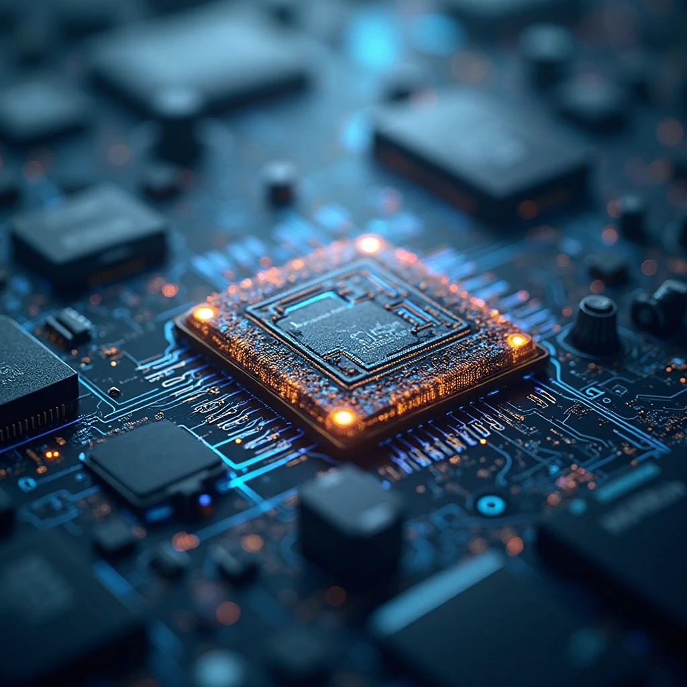
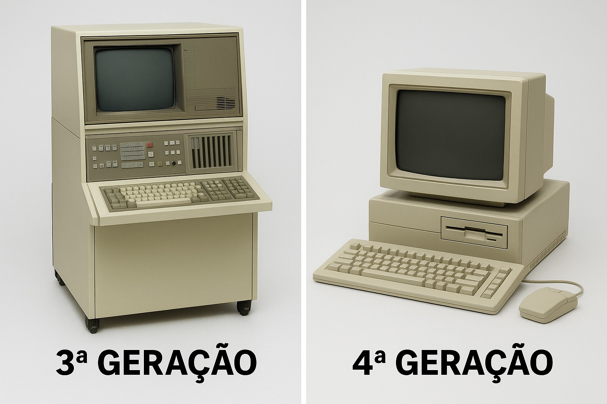

Miniaturização: circuitos integrados que permitiram miniaturização e maior velocidade. Esse avanço reduziu custos e ampliou o acesso à tecnologia;
Sistemas Operacionais: surgiram para facilitar a comunicação entre homem e máquina. Permitiam organizar e executar várias tarefas ao mesmo tempo;
Software Compatível: software compatível abrindo caminho para padronização. Programas passaram a funcionar em diversas máquinas isso abriu caminho para o crescimento do mercado de software.


Transição para a Quarta Geração
Evolução dos Circuitos: miniaturização contínua dos circuitos integrados. Circuitos integrados ficaram ainda menores e mais potentes. Essa evolução tornou os computadores mais acessíveis;
Microprocessador: surgimento do microprocessador. Reuniu toda a CPU dentro de um único chip. Reduziu drasticamente tamanho e custo dos computadores;
Computadores Pessoais: Início da era dos computadores pessoais (PCs). Permitiram que qualquer pessoa tivesse um computador em casa. Saíram das grandes empresas e chegaram às escolas e escritórios.